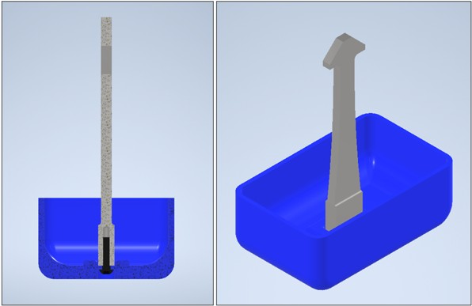
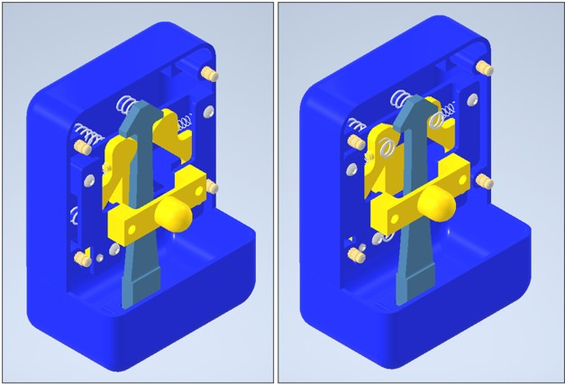

Push-to-Release Snap Lock — Mechanism Design
- Type
- Self-initiated mechanism study
- Materials
- MJF PA12, steel
- Tools
- Autodesk Inventor
- Scope
- Concept to manufacture
Brief Self-initiated project to develop mechanism design skills. Objective: a compact push-to-lock, push-to-release latch that holds tension securely and releases consistently regardless of the load applied to it.
Approach An arrowhead pin enters a frame and spreads two spring-loaded pawls, which return behind the barb to lock. Release is achieved by displacing the pawls out of the locking plane rather than spreading them, so the release path is independent of the direction of applied load.
Key decisions
- Out-of-plane release: chosen over a spreading release so that tension on the latch cannot contribute to unlatching, and so release force does not vary with applied load.
- Return springs: compression springs seated on captive posts rather than torsion springs — simpler to locate, more forgiving on tolerances, and available from stock rather than custom.
- Spring selection: sized from the required holding force and the travel at full pawl opening, with preload set so the pawls are held firmly closed at rest, and solid height checked against the geometric hard stop.
- Insertion geometry: 45° ramp on the arrowhead, checked against the friction angle to confirm the wedge cannot self-lock, with the friction penalty accounted for when sizing the springs.
- Manufacture: MJF-printed PA12 frame and pawls with heat-set threaded inserts, and steel for the arrowhead and pivot pins where wear and contact stress concentrate. Using MJF printing reduces the cost and weight substantially while keeping the loaded interfaces in metal to have higher durability and resistance to wear.
- Self-criticism: As a self-initiated learning project, I did not design any mounting interface into the casing so the lock does not fasten anything to anything else — it only latches to itself.

- The bottom counterpart was initially a single machined part. To improve manufacturability and reduce cost, I switched to a screwed assembly of an MJF-printed base and a steel arrowhead pin.

